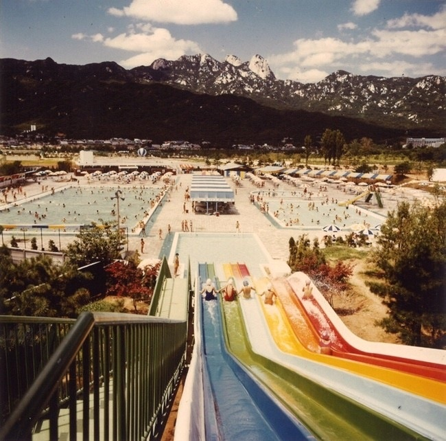
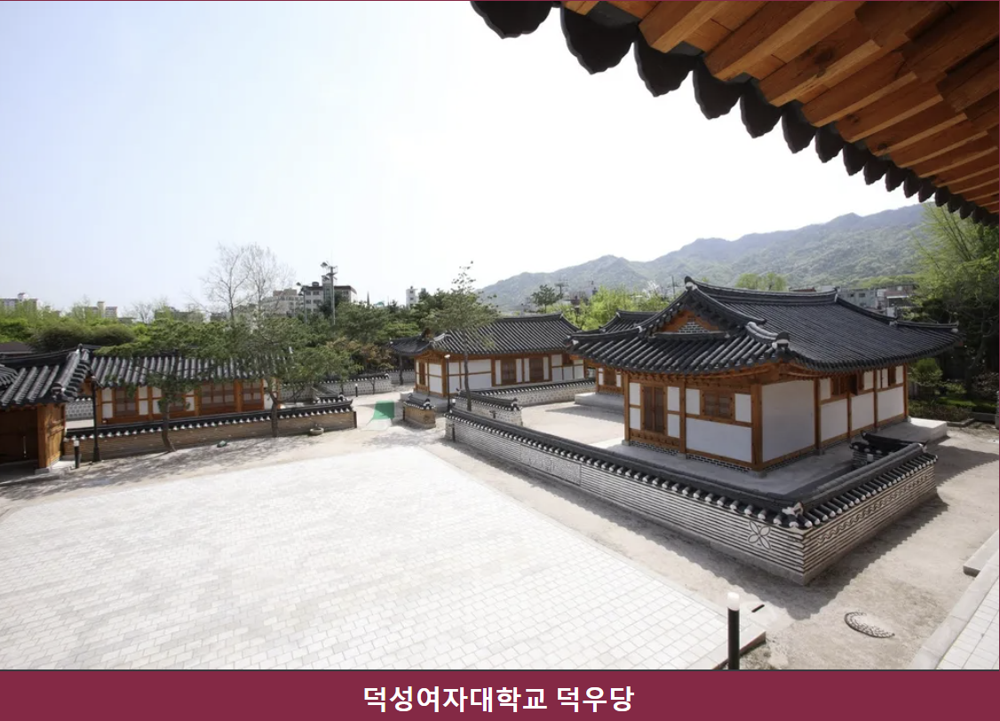

1) 덕성여대 맛집
식사류
1)엘수에뇨 : 서울특별시 도봉구 삼양로142길 3
2)솔밭집 : 서울특별시 강북구 삼양로 541 2층 솔밭집
3)포36 : 서울 도봉구 삼양로 534-6 1층
4)산책 : 서울 도봉구 삼양로144길 18
5)유부애 : 서울 도봉구 삼양로144길 25-5
6)치즈밥있슈 : 서울 도봉구 삼양로 538-6 1층
카페 / 디저트류
1)블랙다운 : 서울특별시 강북구 삼양로 528-1 1층
2)커피 배우다 : 서울 도봉구 삼양로142길 7 1층 커피배우다
3)카페 크레프리 : 서울특별시 도봉구 삼양로144길 18 2층
4)노르웨이 안 우드 : 서울 도봉구 삼양로142길 3 1층 우측
5)콩블랑제리 : 서울 도봉구 삼양로142길 33 지하
6)eeeyo : 서울특별시 도봉구 삼양로142길 33 1층
7)베어베이크 : 서울특별시 강북구 한천로 1180 1층
2) 덕성여대 출신 인물
3) 덕성 TMI
우리대학에 수영장이 있었다고?

우리대학에 수영장이 있었다고?
학교법인 덕성학원은 수익사업의 일환으로 쌍문동 캠퍼스에 테니스장과 수영장을 설치해 운영했다. 수영장은 1976년 6월 25일 처음 개장됐다. 당시 수영장은 3개의 수영풀과 하이슬라이더를 갖추고 있었고 총 2천여 명의 인원을 수용할 수 있었다. 수영장이 위치해 있던 공간에는 현재 하나누리관과 드림필드 풋살구장이 위치해 있다.우리대학이 배경이된 드라마
종로 캠퍼스는 아름다운 외관으로 오래전부터 궁(드라마), 더킹투하츠, 각시탈 등 드라마나 영화ㆍ패션화보 등의 촬영지로 많이 사용되어 왔다.
쌍문동 캠퍼스는 드라마 고백 부부, 신서유기, 멜로홀릭, 싸우자 귀신아(드라마), 응답하라 1988, 식샤를 합시다 2, 멜로가 체질 과 김수현 2%(음료) 광고 등 무수히 많은 촬영이 진행됐으며 한학기에 두세 가지의 드라마 촬영이 꾸준히 이루어진다. 공유가 나오는 도깨비(드라마)에서 쌍문 캠퍼스 도서관을 볼수 있다. (예술서적 900번대 자리) tvn 드라마 화양연화 - 삶이 꽃이 되는 순간에 나오는 법과대학 건물이 바로 쌍문동 캠퍼스 인문사회관이다
우리 대학의 한옥건물

대학에선 매우 드문 한옥 건물이?
캠퍼스로는 매우 드물게 한옥 건물인 덕우당(德友堂)이 있다. 덕우당은 ‘덕(德)이 있는 벗들이 모이는 곳’이라는 의미로 1930년 종로구 관훈동에 건축된 후 1998년 현재의 위치로 이전했다. 여러 채의 한옥이 미음(ㅁ)자로 둘러져 있어 꽤나 큰 규모를 자랑하며, 평소에는 심리상담센터로 사용하고있다. 축제기간에는 한복문화동아리 '꽃신을 신고'가 개최하는 한복파티가 열린다. 덕우당은 서울특별시에서 주최한 ‘서울 아름다운 건물 찾기’의 수상작이기도 하다.우리 대학이 문화유산?